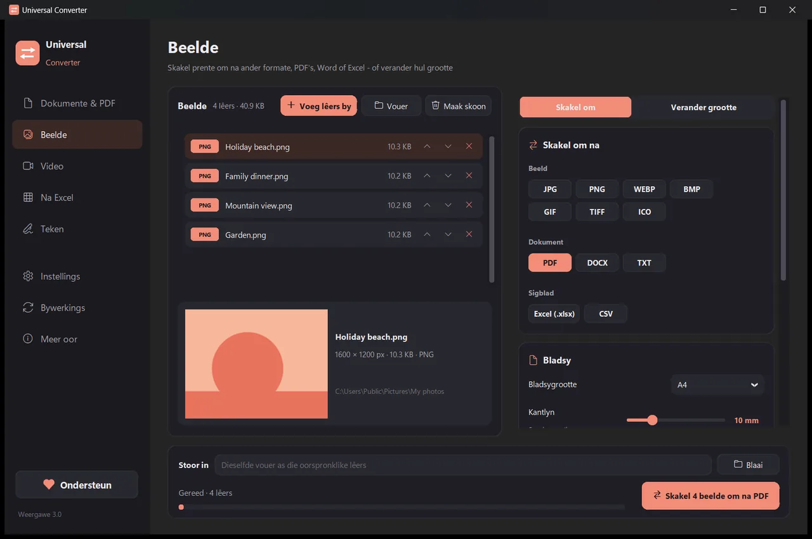
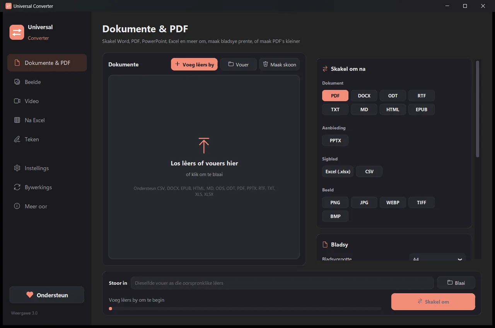
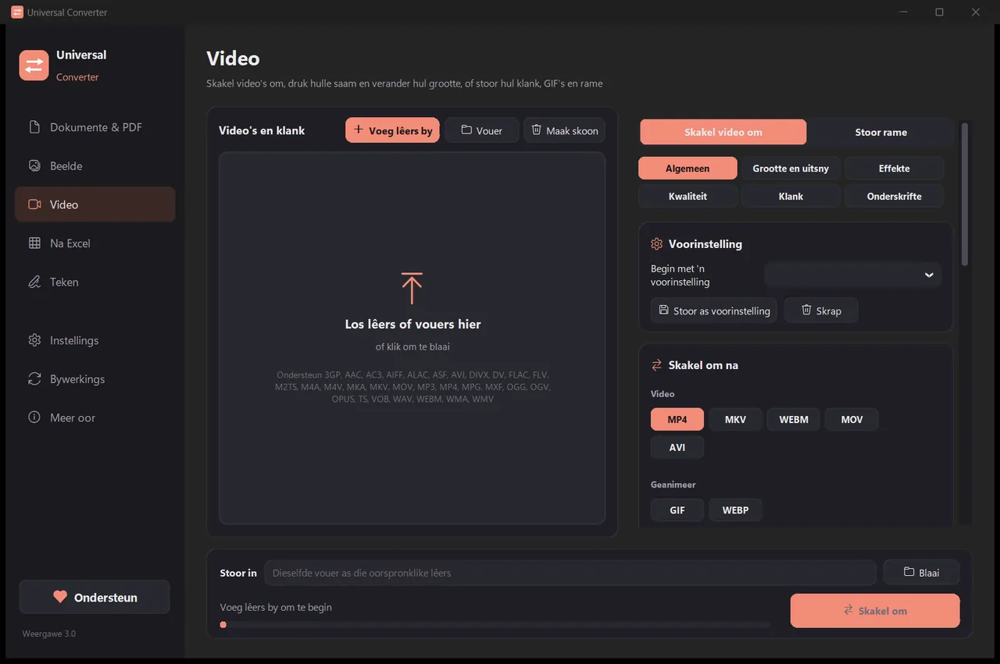
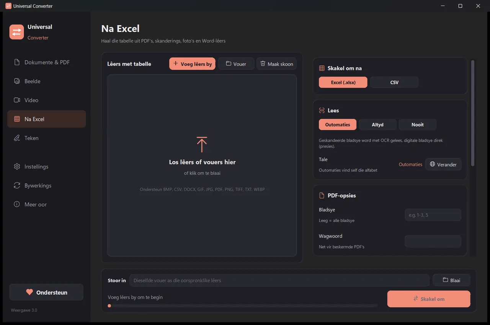
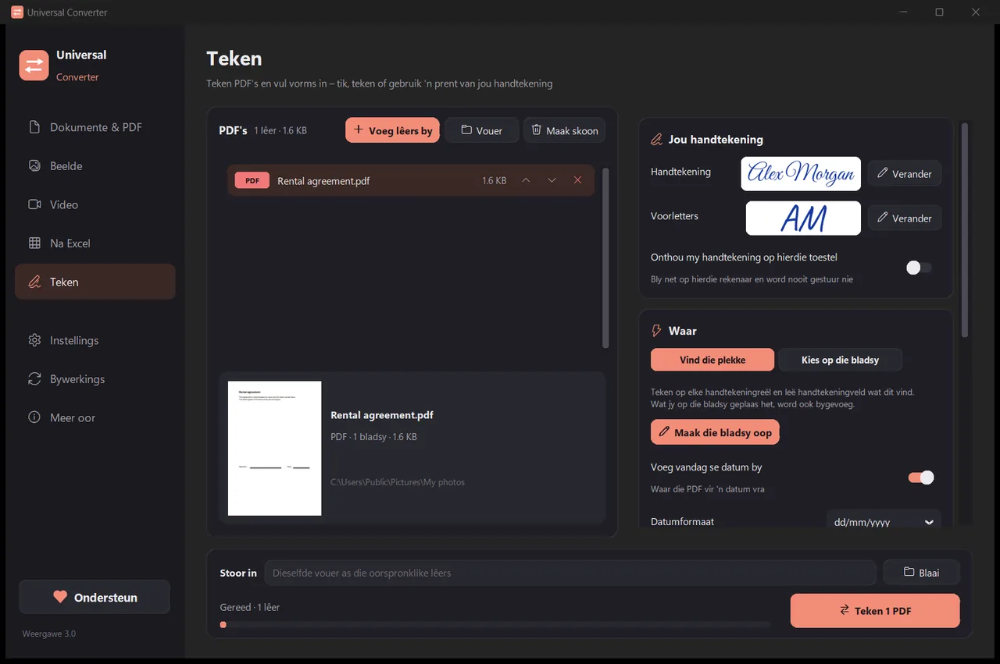

Skakel jou lêers op jou eie toestel om
Beelde, dokumente, video en klank, PDF's en tabelle na Excel, alles in een program. Niks word opgelaai nie: jou lêers verlaat nooit jou toestel nie.
Hoe om te installeer en by te werk
- Maak die afgelaaide .dmg oop en sleep Universal Converter na Applications.
- Maak die program oop. Die eerste keer blokkeer macOS dit omdat dit nie deur Apple onderteken is nie: klik Done.
- Maak System Settings > Privacy & Security oop, blaai af, klik Open Anyway en voer jou wagwoord in. Jy doen dit net een keer.
Bywerkings: as jy dit toelaat wanneer die program die eerste keer oopmaak, kyk dit elke keer as dit begin vir nuwe weergawes, verifieer hul digitale handtekening en installeer hulle wanneer jy kies.
Hoe om te installeer en by te werk
- Tik Laai af vir Android op jou foon.
- Maak die afgelaaide lêer oop. As Android vra, laat jou blaaier of lêerbestuurder toe om programme te installeer.
- Tik Installeer.
Bywerkings: die program kyk omtrent een keer per dag en sê vir jou wanneer 'n nuwe weergawe gereed is. Laai dit op dieselfde manier af en installeer dit oor die oue; jou instellings bly behoue.

Privaat
Alles loop op jou toestel. Geen oplaai, geen wag in 'n tou, geen groottebeperkings nie.
Gratis
Gratis om te gebruik, sonder advertensies, rekening of watermerk.
18 tale
Afrikaans, Engels, Grieks, Spaans, Italiaans, Duits, Frans, Portugees, Pools, Russies, Arabies, Hebreeus, Chinees, Japannees, Koreaans, Tamil, Joruba en Hausa.
Vyf hulpmiddels in een venster

Dokumente & PDF
Skakel om tussen PDF, Word, ODT, RTF, TXT, Markdown, HTML, EPUB, PowerPoint en Excel. Maak bladsye beelde en kombineer verskeie lêers in een PDF. Lettertipes, groottes en kleure bly behoue. Maak PDF's kleiner, tot die grootte wat jy kies.
Beelde
Skakel om tussen JPG, PNG, WEBP, TIFF, BMP, GIF en ICO. Verander grootte volgens pieksels, persent of lêergrootte, kombineer prente in 'n PDF- of Word-lêer, en lees die teks in prente (OCR). PDF's kan ook bygevoeg word: elke bladsy word 'n prent.

Video
Skakel video's om tussen MP4, MKV, WebM, MOV en AVI, en pers hulle saam met AV1, H.265, H.264 of VP9. Knip, sny uit, draai en verander grootte, maak GIF's, stoor rame as prente, of hou net die klank as MP3, M4A, FLAC, WAV, OGG of Opus. Op Android: MP4 of MKV met H.264 of H.265; knip, sny uit, draai, verander grootte, stoor rame, of hou die klank as M4A.

Na Excel
Trek tabelle uit PDF's, skanderings en foto's na Excel of CSV: bankstate, fakture, pryslyste. Lees Afrikaans, Engels, Grieks en meer as 30 ander tale.

Teken
Teken PDF's en vul vorms in. Tik jou naam in 'n handskrifstyl, teken jou handtekening of gebruik 'n foto daarvan. Die program vind self die handtekeningreëls, of jy klik waar die handtekening, voorletters, datum, teks of regmerkies moet kom. Teken baie lêers gelyk; die oorspronklikes bly onaangeraak.
- Gebruik jou grafiese kaart vir video wanneer dit kan: gewoonlik 5 tot 20 keer vinniger.
- Sleep hele vouers in: elke lêer word in een slag omgeskakel.
- Sê vir jou wanneer 'n lêer in 'n ander oortjie hoort, en neem dit met een klik soontoe.
- Sê vir jou van nuwe weergawes; op Windows en Mac kan dit hulle vir jou installeer, digitaal geverifieer.
- Ligte en donker voorkoms, om by jou toestel te pas.
Hoe dit werk
- Maak Universal Converter oop en kies Dokumente & PDF · Beelde · Video · Na Excel · Teken aan die linkerkant.
- Sleep jou lêers of 'n hele vouer in die venster, of klik "Voeg lêers by".
- Klik "Skakel om". Die nuwe lêers word langs die oorspronklikes gestoor, of in die vouer wat jy kies.
Wat dit kan doen
- Skakel 'n PDF om na Word
- Skakel Word-dokumente om na PDF
- Kombineer verskeie lêers in een PDF
- Komprimeer 'n PDF tot 'n grootte wat jy kies
- Skakel PDF-bladsye om na JPG-prente
- Maak 'n geskandeerde dokument 'n wysigbare Word-lêer
- Skakel prente om tussen JPG, PNG, WEBP en meer
- Verander die grootte van prente of verklein hulle tot 'n lêergrootte
- Kombineer foto's in een PDF
- Kopieer die teks uit 'n prent (OCR)
- Pers 'n video saam sonder om dit op te laai
- Skakel video's om tussen MP4, MKV, WebM, MOV en AVI
- Stoor die klank van 'n video as MP3
- Maak 'n GIF van 'n video
- Trek tabelle uit 'n PDF na Excel
- Skakel 'n bankstaat-PDF om na Excel
- Haal tabelle uit PDF-fakture na Excel
- Teken 'n PDF
- Vul 'n PDF-vorm in
Vrae
Is dit regtig gratis?
Ja. Universal Converter is gratis om te gebruik, sonder advertensies, rekening of tydsbeperking. As dit jou help, kan jy sy ontwikkeling met 'n vrywillige bydrae ondersteun, maar jy hoef nooit.
Word my lêers êrens opgelaai?
Nee. Elke omskakeling gebeur op jou eie toestel, so dit werk ook sonder 'n internetverbinding. Die program gaan net aanlyn om vir bywerkings te kyk, om ekstra tale wat jy kies af te laai en, as jy dit toelaat, om anonieme foutverslae te stuur.
Windows wys 'n SmartScreen-waarskuwing. Is dit normaal?
Ja. Die installeerder is nog nie met 'n kodesertifikaat onderteken nie, so Windows herken dit nie. Kies "Meer inligting" en dan "Hardloop in elk geval". Bywerkings daarna word deur die program self digitaal geverifieer. Of installeer dit uit die Microsoft Store, wat geen waarskuwing wys nie.
Hoe maak ek dit op 'n Mac oop?
Maak die afgelaaide lêer oop en sleep Universal Converter na Applications. Die program is nie deur Apple onderteken nie, so die eerste keer wat jy dit oopmaak, blokkeer macOS dit: klik Done, maak dan System Settings > Privacy & Security oop, klik "Open Anyway" en voer jou wagwoord in. Jy doen dit net een keer.
Hoe installeer ek dit op Android?
Laai die APK op jou foon af, maak dit oop en laat die installering toe wanneer gevra word (Android 10 of nuwer). Engels en Grieks is ingebou; die ander tale kan in die program se Instellings afgelaai word. Die program sê vir jou wanneer daar 'n nuwe weergawe is.
Watter tale praat dit?
Die program is in Afrikaans, Engels, Grieks, Spaans, Italiaans, Duits, Frans, Portugees, Pools, Russies, Arabies, Hebreeus, Chinees, Japannees, Koreaans, Tamil, Joruba en Hausa. Jy kies in die installeerder, of later in Instellings.